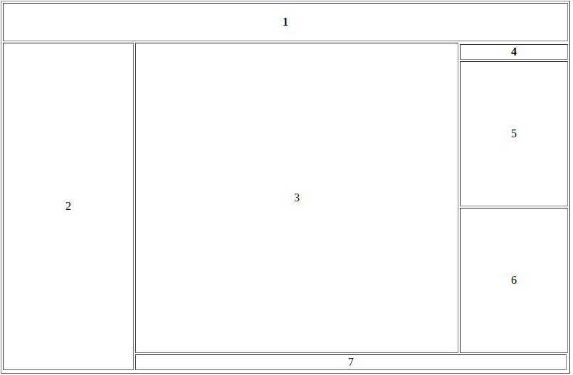

- Шапка
- Актуальная информация, например свежие новости
- Основное содержимое страницы
- Заголовок блока рекламы
- Первый блок рекламы
- Второй блок рекламы
- Второстепенная информация
Задание: Создать html-страницу с заданной компоновкой областей
Компоновку и содержимое областей придумать самостоятельно. Желательно придерживаться определенной тематики по выбору.
Требования: число областей от 5 до 8 (не менее 2-х атрибутов colspan и 2=х атрибутов rowspan с разными значениями).
Об авторе: сделано студентом группы 8О-106М-19 Капраловым Никитой. Вариант 16
На основную страницу